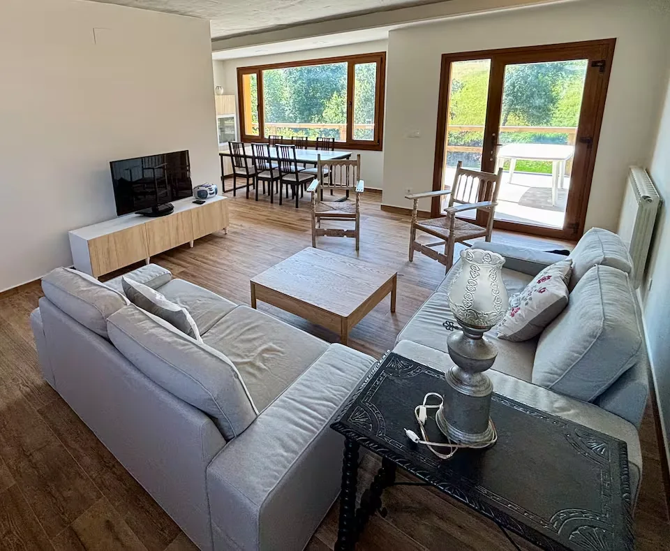
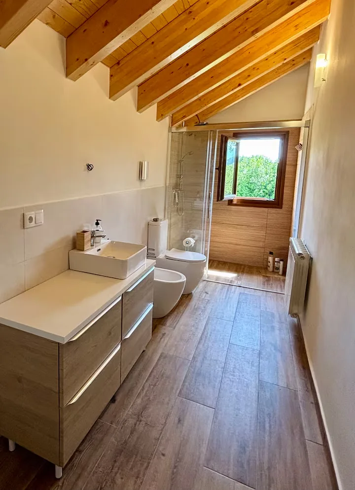
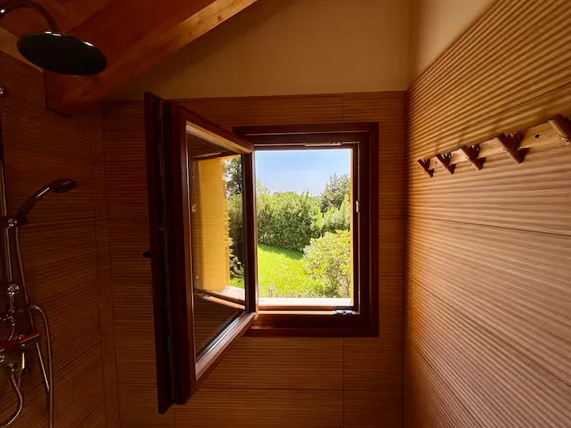
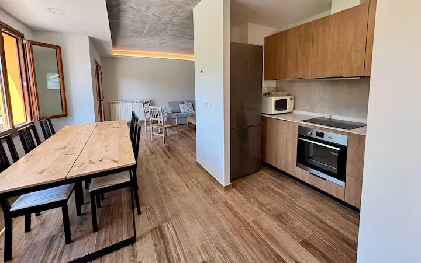

Para estar juntos
Cocina, comedor y salón conectados para compartir los días sin prisas.

Un chalet amplio en Castiello para compartir la escapada con familia o amigos.
El salón se abre al comedor y a la cocina. Fuera, el porche y el jardín dejan espacio para alargar la tarde.
Cocina, comedor y salón conectados para compartir los días sin prisas.
Cuatro dormitorios en la planta superior, con dos baños en la vivienda.
Porche, zona de césped y aparcamiento dentro de la propiedad.




 El entorno de Colunga
El entorno de ColungaCastiello es un buen punto de partida para recorrer la costa de Colunga y los paisajes del Sueve.
La casa tiene escaleras. Consulta con Hernán la distribución de camas, las condiciones de la estancia y cualquier necesidad antes de reservar.
Registro turístico: VV-1763-AS
Elige tus fechas y consúltalas con Hernán. Te responderá personalmente sobre disponibilidad y condiciones.
La consulta no es una reserva. Hernán confirmará la estancia antes de que decidas.
Te ayudo con los detalles que conocemos de Chalet nuevo muy bien comunicado. Si falta algo, Hernán puede responderte personalmente.
No compartas datos personales. Tus preguntas se envían a Google Gemini para responder. Privacidad.
¿Necesitas confirmar un detalle? Habla con Hernán por WhatsApp ↗